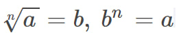
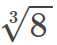
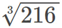
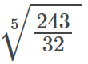
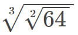
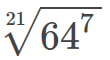
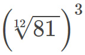
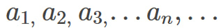

Властивості кореня n-го степеня
Коренем n-го степеня з числа а називається таке число, n-й степінь якого дорівнює а, тобто:
Теорія
Знаходження кореня n-го степеня з числа а називають добуванням кореня n-го степеня, число а називають відкореневим числом, а число n - показником кореня.
У випадку якщо a < 0 , то корінь n-го степеня цього числа не існує.
* при n = 3, замість «корінь третього степеня» можна сказати «корінь кубічний».
Наприклад
, так як 34 = 81.
Вирішуємо разом
Користуючись формулами знайдіть значення цих виразів, і звітреся з відповідями знизу.
1) 
2) 
3) 
4) 
5) 
6) 
Відповіді:
1) В-дь: 2
2) В-дь: 6
3) В-дь: 1.5
4) В-дь: 2
5) В-дь: 4
6) В-дь: 3
Числові послідовності (прогресії)
1. Арифметична прогресія
Послідовність, де кожен член починаючи з другого можна знайти додавши до попереднього одне й те саме число d, називають арифметичною прогресією.
